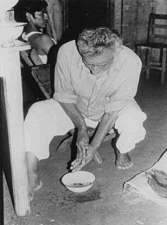
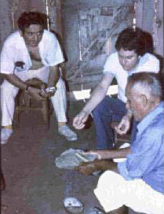
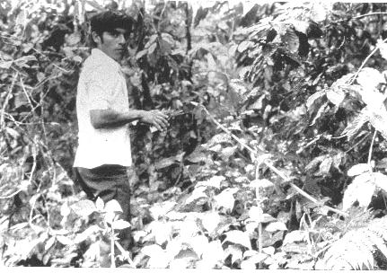

There is an old-fashioned way to prepare Salvia divinorum. Get a pile of leaves, some water and a shaman........ |
 | |||||||||
|  | Here's Don Alejandro blessing some S. divinorum wrapped in a large leaf. He's passing it through copal incense. |
|||||||||
Here's a picture of Felipe Vicente, who translated for us in Oaxaca. He is Don Alejandro's son. We are up on Cerro Quemado in a patch of Salvia divinorum & he is picking leaves. This is the best way to get "las hojas de la Maria Pastora" (around 1980 - used in the 2nd trip report in our Salvia paper - see: "Ethnopharmacology of Ska María Pastora"). |
 | |||||||||